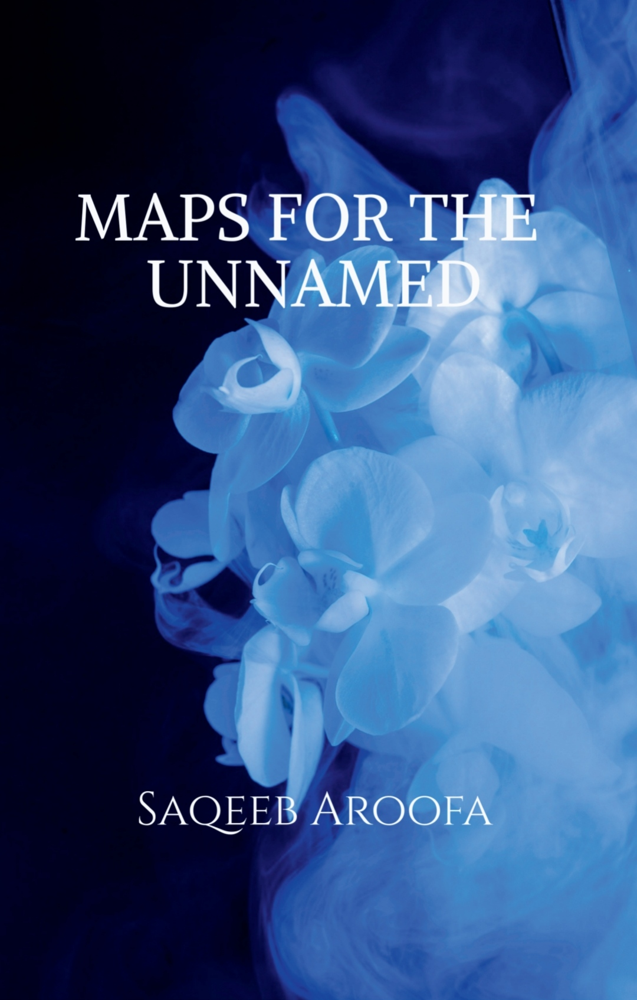

So far, that’s one issue. We’re working on it.
The first edition: an editor’s note, and the start of the literary side and the conscience of the publication.
Read the issue* Footnote nobody asked for: new issues will appear here, newest first.

a little book that found its way here ♡
Maps for the Unnamed is a collection of 60 prose-poetry pieces exploring unnamed feelings, quiet struggles, unspoken thoughts and the complicated landscapes of being human. It gives language to emotions that often remain unexplained, offering readers a place to recognise themselves in words they may never have known how to express.
Written and completed at seventeen, the book moves through themes of healing, belonging, memory, loneliness and the little things that make us feel understood.